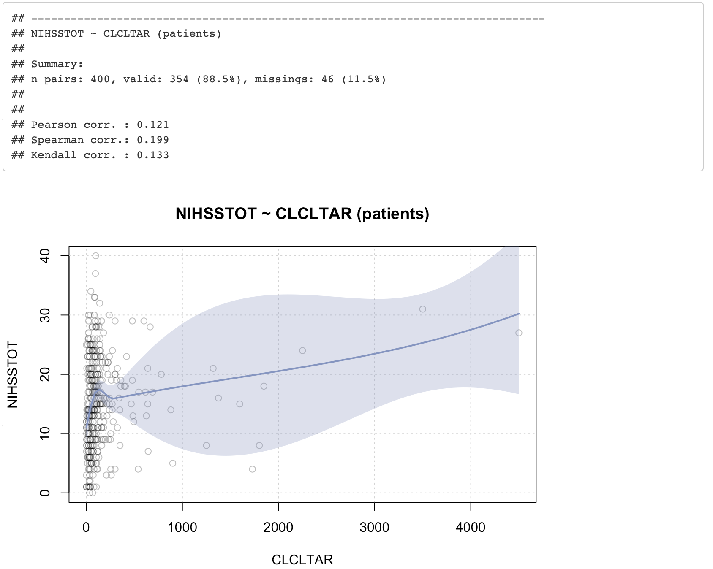
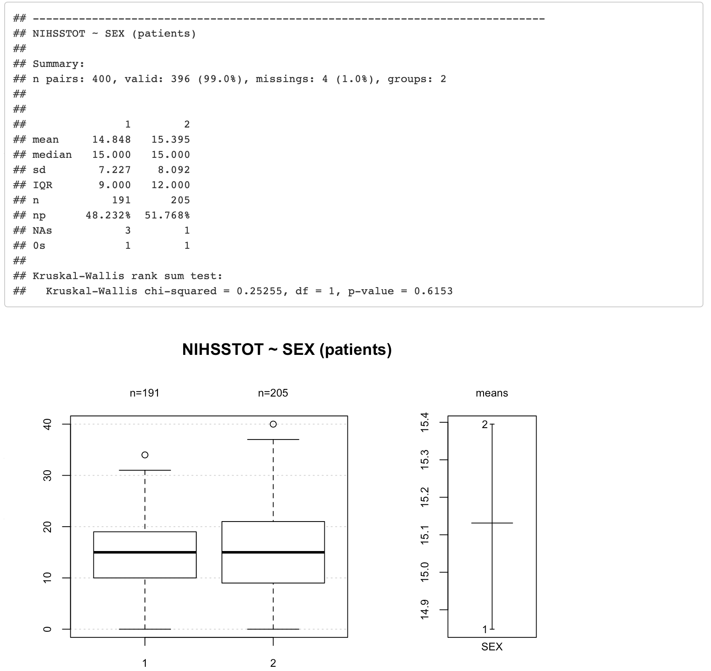
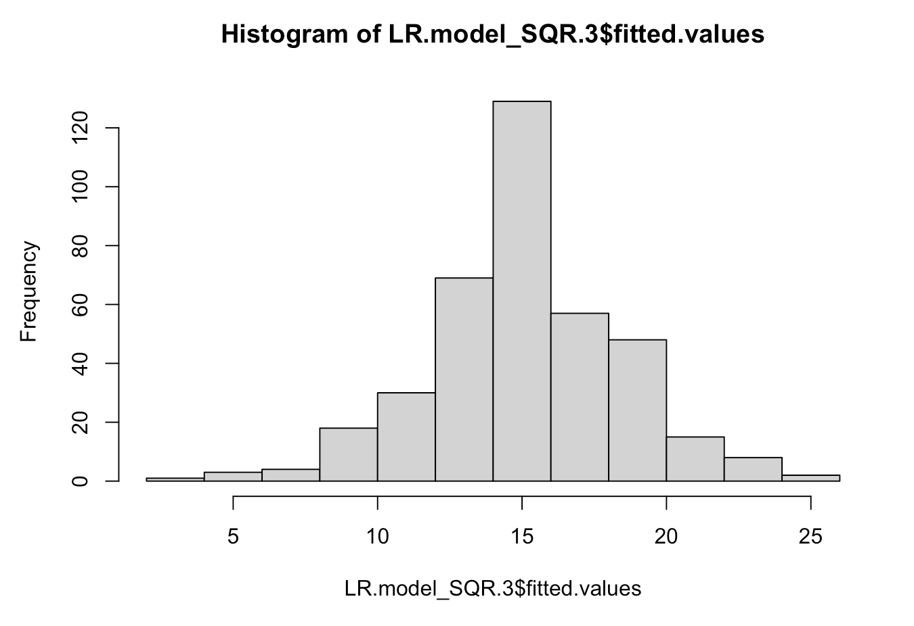

Stroke Analysis
Peter Dimler
2023-09-10
Executive Summary
Between February of 2021 and April of 2022, a Penumbra-sponsored study collected medical data, encompassing social history to genetics from 400 different stroke patients. The goal of the study was to discover medically relevant details about patients that could further the understanding of stroke severity and treatment. This analysis explored over 10GB of data and found evidence that helps explain the variability in stroke severity among male and female patients.
Project Overview
Background
Stroke is a leading cause of long term disability in the United States. According to the CDC, more than 795,000 Americans suffer from a stroke each year. A stroke is a medical emergency where either:
- blood flow to the brain is blocked by a clot (Ischemic Stroke) or
- bleeding in the brain occurs due to a ruptured artery (Hemorrhagic Stroke)
Both events can damage the brain and cause long-term disability or death. The severity of a stroke is often measured using the National Institutes of Health Stroke Scale (NIHSS). The final score (ranging from 0 to 42) is derived using 15 neurological examination questions and the stroke severity can roughly be interpreted using the following bands:
- Very Severe: >= 25
- Severe: 15 - 24
- Moderate: 5 - 14
- Mild: 1 - 4
Between February of 2021 and April of 2022 various medical details were collected from 400 stroke patients as part of a study sponsored by Penumbra, a company that is developing products to help treat stroke patients. The data is broken into the following three categories:
- Hospital Data: The study attempted to collect each patient’s medical and social history as well as specific details related to their stroke and any treatment they received. The data is gathered into a table that has 400 rows (1 for each patient) and 248 columns which capture the details gathered for each patient.
- Proteomics: The study collected blood and clot samples from 80 of the patients and Creative Proteomics ran the protein samples on SDS-PAGE gel followed by in-gel digestion and then identified and quantified 1600+ proteins by applying their nanoLC-MS/MS platform.
- Genetics: Genotypes for each of the 400 patients were extracted in the form of Single Polynucleotide Polymorphisms (SNPs). Each SNP is a single base location in the DNA where there is known to be substantial population variability. The SNP data collected in the study has over 654K SNPs totaling 9.97GB of data.
Objective
The goal of this analysis was to identify any information contained in the study that could advance our understanding of strokes with the hope of improving patient treatment. Accordingly, this analysis focused on creating explanatory models as opposed to a predictive model.
Analysis
Hospital Data
Exploratory Data Analysis (EDA)
Since the objective of this analysis was to construct an explanatory model, EDA played a key role in assessing data quality, choosing a response variable, selecting candidate predictors, and identifying any data handling techniques needed.
Choosing a Response
The hospital data had several variables that could be used to assess the severity of a patient’s stroke. Such variables include the scores assigned using the Glasgow Coma Scale (GCSSCTOT), National Institutes of Health Stroke Scale (NIHSSTOT), and Modified Rankin Scale (MRSSCORE). Changes in these scores between patient admission and discharge could also be considered to search for treatment effects. Choosing which variable to use as the response for this analysis boiled down to selecting the one with the fewest missing values. For admitted patients, the GCSSCTOT was missing for 335 of the 400 patients, the MRSSCORE was missing for 86 of the patients, and the NIHSSTOT score was only missing for 2 of the patients. Missing values were prevalent within the discharge details as well and as a result, the patient’s total National Institutes of Health Stroke Scale score (NIHSSTOT) at admission was selected as the response variable for this analysis.
Univariate statistics for the NIHSSTOT value can be viewed by expanding the drop down below. The first 2 plots show the distribution of the NIHSSTOT values and the bottom plot shows its cumulative distribution. From these plots we can see that our patient’s stroke severity scores are slightly positively skewed and that they cover the full range of scores with half of the patients having Mild to Moderate stroke severity scores and half having Severe to Very Severe scores.
Univariate Statistics
Selecting Candidate Predictors
Since the goal of this analysis was to create an explanatory model, candidate selection for potential predictors was done by manually reviewing the 240+ predictors to determine if there was enough data present to merit an analysis, if there were potential differences in centrality and spread, and if the predictor should reasonably be included in the model based on previous stroke analyses or demographic areas of interest. In the end, the following 23 predictors were selected as candidates for an explanatory model.
- GLUC: Glucose Level (mg/dL)
- WBC: White Blood Cell Count (k/uL)
- RBC: Red Blood Cell Sount (k/uL)
- HCT: Hematocrit (Percentage of red blood cells by volume)
- HBG: Hemoglobin (g/dL)
- CLCLTAR: Clot Area
- CLCLTWT: Clot Weight
- AGE: Age in years (integer)
- SEX: Sex male (1) or female (2)
- HEIGHT: Height (CM)
- WEIGHT: Weight (KG)
- BMI: Body Mass Index (kg/m^2)
- MHNONE: Pertinent medical history (Y = Yes)
- MHPSIS: Suffered previous ischemic stroke (Y = Yes)
- MHPSTIA: Suffered previous transient ischemic attack (Y = Yes)
- MHDVT: Suffered from deep vein thrombosis (Y = Yes)
- MHDM: Has Diabetes ( Y = Yes)
- MHHTN: Has Hypertension (Y = Yes)
- MHTHROMB: Has medical history of Thrombocytopenia
- MHATEXCR: Has medical history of Extracranial - Carotid Atherosclerosis
- MHPSISEL: Previous type of ischemic stroke (when applicable)
- SHALCUSE: History of Alcohol Use
- SHMRJYN: History of Marijuana use
The summary statistics for each candidate predictor are provided in the tabs below and can be viewed by selecting the predictor tab and clicking the univariate statistics drop down arrow. The relationship between each candidate predictor and the response variable (NIHSSTOT) can be reviewed by expanding the bivariate statistics drop down.
Numeric Candidates
GLUC
- Category: Baseline Laboratory Values
- Name: Glucose
- Label: GLUC
- Details: The glucose levels of all of the patients in this study were measured in mg/dL. Notably, the data is positively skewed and has a slight positive correlation with stroke severity.
Univariate Statistics
Bivariate Statistics
WBC
- Category: Baseline Laboratory Values
- Name: White Blood Cells
- Label: WBC
- Details: The white blood cell count was recorded in k/uL or 10^3 cells /mm^3 for nearly every patient. The units are equivalent and the standard range for white blood cell count count is 4 - 11 K/uL. One notable feature of the data is that it is positively skewed and has a slight positive correlation with stroke severity.
Univariate Statistics
Bivariate Statistics
RBC
- Category: Baseline Laboratory Values
- Name: Red Blood Cells
- Label: RBC
- Details: The red blood cell count was recorded (equivalently) in k/uL or 10^3 cells /mm^3 for nearly every patient. The data does not have any apparent outliers and is fairly symmetric in distribution. The red blood cell count, on its own, isn’t correlated with the stroke severity but was included since it helps describe the patient’s blood composition.
Univariate Statistics
Bivariate Statistics
HCT
- Category: Baseline Laboratory Values
- Name: Hematocrit
- Label: HCT
- Details: Hematocrit is the percentage of red blood cells by volume. The data is fairly symmetric in distribution and doesn’t appear to have any notable outliers. Like the red blood cell count, Hematocrit on its own isn’t correlated with the stroke severity but was included since it helps describe the patient’s blood composition.
Univariate Statistics
Bivariate Statistics
HBG
- Category: Baseline Laboratory Values
- Name: Hemoglobin
- Label: HBG
- Details: Each patient’s hemoglobin level was measured in g/dl. The data is fairly symmetric in distribution and doesn’t appear to have any notable outliers. Hemoglobin on its own isn’t correlated with the stroke severity but was included since it helps describe the patient’s blood composition.
Univariate Statistics
Bivariate Statistics
CLCLTAR
- Category: Histopathology Results of Thrombus Retrieval
- Name: Clot area
- Label: CLCLTAR
- Details: The CLCLTAR is the clot area. The units were not provided but were presumably entered in square millimeters. The data is positively skewed and does appear to have some outliers. Additionally, there were 42 patients that did not have a value for the clot area. The clot area was included since it has a slight positive correlation with stroke severity.
Univariate Statistics
Bivariate Statistics
CLCLTWT
- Category: Histopathology Results of Thrombus Retrieval
- Name: Clot weight
- Label: CLCLTWT
- Details: The CLCLTWT is the clot weight. The units were not provided and the data is positively skewed and does appear to have some outiers. Similar to CLCLTAR, the clot weight was not available for 42 of the patients. The clot weight was included since it has a slight positive correlation with stroke severity.
Univariate Statistics

Bivariate Statistics
AGE
- Category: Demographics
- Name: Age
- Label: AGE
- Details: The Age variable, measured in years, is symmetrically distributed without any outliers. Age, on its own, doesn’t appear to have a notable correlation with stroke severity but was included since it helps describe the patient’s demographics.
Univariate Statistics
Bivariate Statistics
HEIGHT
- Category: Demographics
- Name: Height
- Label: HEIGHT
- Details: The patient’s height was measured in centimeters and the values are fairly symmetric in distribution. Two of the patients had heights less than 95 centimeters which seemed unlikely and causes issues with BMI. As a result, the data associated with these patients was dropped from the analysis. The patient’s height does not have a notable correlation with the stroke severity but was included since it helps describe the patient’s physical attributes.
Univariate Statistics
Bivariate Statistics

WEIGHT
- Category: Demographics
- Name: Weight
- Label: WEIGHT
- Details: Each patient’s weight was measured in kilograms and the values are slightly positively skewed. The patient’s weight does not have a notable correlation with the stroke severity but was included since it helps describe the patient’s physical attributes.
Univariate Statistics
Bivariate Statistics
BMI
- Category: Demographics
- Name: Body Mass Index
- Label: BMI
- Details: BMI is the patient’s Body Mass Index in kilograms / meter^2. The values are positively skewed and contain 2 outliers as a result of the patients with heights less than 95cm. BMI does not have a notable correlation with the stroke severity but was included since it helps describe the patient’s physical attributes.
Univariate Statistics
Bivariate Statistics
Categorical Candidates
SEX
- Category: Demographics
- Name: Sex
- Label: SEX
- Details: The Sex variable indicates if a patient is a male (1) or female (2). While there isn’t a noticeable difference in the mean stroke severity, the box plots have a difference in variance and sex was selected as a candidate variable as a result.
Univariate Statistics
Bivariate Statistics
MHNONE
- Category: Medical History
- Name: No Pertinent Medical History
- Label: MHNONE
- Details: The MHNONE variable is ‘Y’ if there is no pertinent medical history for the Patient. Patients who indicated that they had no pertinent medical history appear (from the boxplots) to have less severe strokes and the factor was selected as a candidate as a result.
Univariate Statistics
Bivariate Statistics
MHPSIS
- Category: Medical History
- Name: Previous Ischemic Stroke
- Label: MHPSIS
- Details: The MHPSIS variable indicates if a patient suffered from a previous ischemic stroke. Patients who suffered from prior Ischemic strokes appear to experience more severe strokes making this a good candidate predictor.
Univariate Statistics
Bivariate Statistics
MHPSTIA
- Category: Medical History
- Name: Previous Transient Ischemic Attack
- Label: MHPSTIA
- Details: The MHPSTIA variable indicates if a patient had a previous transient ischemic attack. Only 10 patients indicated that they had a previous transient ischemic attack and their median stroke severity appears (based on the boxplots) to be slightly less than those who didn’t experience a previous transient ischemic attack. This was selected as a candidate predictor due to its relation to ischemic strokes.
Univariate Statistics
Bivariate Statistics
MHDVT
- Category: Medical History
- Name: Deep Vein Thrombosis
- Label: MHDVT
- Details: MHDVT indicates if a patient has suffered from deep vein thrombosis. An interesting feature of the boxplots found under the Bivariate statistics below is that the data for patients who suffered from deep vein thrombosis appears to be positively skewed. This may suggest that these patients are less likely to experience mild to moderate strokes.
Univariate Statistics
Bivariate Statistics
MHDM
- Category: Medical History
- Name: Diabetes Mellitus
- Label: MHDM
- Details: The MHDM variable indicates if a patient has diabetes. Patients with diabetes appear to suffer from more severe strokes on average. This aligns with GLUC numeric predictor.
Univariate Statistics
Bivariate Statistics
MHHTN
- Category: Medical History
- Name: Hypertension
- Label: MHHTN
- Details: The MHHTN variable indicates if a patient has Hypertension (High blood-pressure). Patients with Hypertension appear to have more severe strokes on average.
Univariate Statistics
Bivariate Statistics
MHTHROMB
- Category: Medical History
- Name: Thrombocytopenia
- Label: MHTHROMB
- Details: The MHTHROMB variable captures if a patient has a medical history of Thrombocytopenia which occurs when platelet counts are low. There seems to be a difference in severity between patients who have a history of Thrombocytopenia and those who don’t but there are a lot of missing values.
Univariate Statistics
Bivariate Statistics
MHATEXCR
- Category: Medical History
- Name: Extracranial - Carotid Atherosclerosis
- Label: MHATEXCR
- Details: The MHATEXCR variable captures if a patient has a medical history of Extracranial - Carotid Atherosclerosis which is a hardening and narrowing of vessels due to fat deposits. There seems to be a difference in severity between patients who have a history of Extracranial - Carotid Atherosclerosis and those who don’t but there are a lot of missing values.
Univariate Statistics
Bivariate Statistics
MHPSISEL
- Category: Medical History
- Name: Type of Previous Ischemic Stroke
- Label: MHPSISEL
- Details: The MHPSISEL variable captures the previous type of ischemic stroke (when applicable). While there are quite a few missing values, it does appear that patients who had a cardio or cryptogenic Ischemic Stroke previously experience more severe strokes when compared against patients that didn’t have a previous ischemic stroke or had a LAA or SAO stroke.
Univariate Statistics
Bivariate Statistics
SHMRJYN
- Category: Medical History
- Name: Marijuana Use
- Label: SHMRJYN
- Details: The SHMRJYN variable indicates if a patient uses marijuana. The data for users appears to be positively skewed which may be an indication that users are less likely to experience mild to moderate strokes.
Univariate Statistics
Bivariate Statistics

SHALCUSE
- Category: Medical History
- Name: Frequency of Alcohol Use
- Label: SHALCUSE
- Details: The SHALCUSE variable captures how many drinks a person estimates that they have per week. Although there are relatively low counts, it appears that the stroke severity of people who report drinking weekly is lower than it is for people who don’t.
Univariate Statistics
Bivariate Statistics
Linear Regression
Linear regression can be used to create an explanatory model that helps us understand which of the candidate factors selected in the EDA process contribute to higher stroke severity scores in patients. As noted in the EDA section, some of the candidate predictors are highly skewed, have outliers, and contain missing values all of which can pose challenges for linear regression. These issues were addressed via data selection, imputation, and data transformations.
Data selection
The hospital data contains data for patients suffering from two distinct stroke types, ischemic and hemorrhagic. There were only 10 patients who both suffered from hemorrhagic stroke and had a NIHSSTOT score. To focus the study, we chose to exclusively examine ischemic stroke patients. Additionally, 2 of the patients had heights below 95 cm and were dropped from the study. This selection reduced the initial data set from 400 to 386 patients.
Filter Data
#Build LR data set
LR.data = patients %>%
filter(!is.na(NIHSSTOT) & IEESTRTY == "ISC" & !(SubjectID %in% c("00272-014","00122-001")) )%>%# Focus on ISC candidates and filter out patients with na HIHSSTOT
dplyr::select(SubjectID, NIHSSTOT # ID and response variables
, GLUC, WBC, RBC, HCT, HBG # Lab metrics from blood
, CLCLTAR, CLCLTWT# Clot metrics
, AGE, HEIGHT, WEIGHT, BMI # Numeric Demographics
, MHNONE, MHPSIS, MHPSTIA, MHDVT, MHDM, MHHTN, SEX, SHMRJYN, SHALCYN # Binary
, MHTHROMB, MHATEXCR # Quartary
, SHALCUSE, MHPSISEL # Quintary
) Imputation
Once the data of interest was selected, there were still a fair amount of missing values in the data. For Numeric data, missing values were replaced with the median value. Missing values for categorical variables were encoded as ‘UNK’ for unknown.
Impute Median
# For Numeric Data, impute the median into missing values
for(i in 1:11){
LR.data[is.na(LR.data[ , (i+2)]) , (i+2)] = median(LR.data[ , (i+2)][[1]], na.rm = T)
}Power Transformations
Power transformations were reviewed for each numeric variable that showed signs of skewness or outliers. The following transformations were made to the data to address skewness and reign in outliers.
GLUC
The log-likelihood curve from box cox analysis (shown below) was used to select an inverse transformation for the glucose variable.
- \(GLUC_{new} = \frac{GLUC_{old}^{-1}-1}{-1}\)
The box plots below show the improvements realized by the transformation.
WBC
The log-likelihood curve from box cox analysis (shown below) was used to select a log transformation for the white blood cell count variable.
- \(WBC_{new} = log(WBC_{old})\)
CLCLTAR
The log-likelihood curve from box cox analysis (shown below) was used to select a log transformation for the clot area variable.
- \(CLCLTAR_{new} = log(CLCLTAR_{old})\)
The box plots below show the improvements realized by the transformation.
CLCLTWT
The log-likelihood curve from box cox analysis (shown below) was used to select a log transformation for the clot weight variable.
- \(CLCLTWT_{new} = log(CLCLTWT_{old})\)
The box plots below show the improvements realized by the transformation.
BMI
The log-likelihood curve from box cox analysis (shown below) was used to select a negative square root transformation for the BMI variable.
- \(BMI_{new} = \frac{BMI_{old}^{-1/2}-1}{-1/2}\)
The box plots below show the improvements realized by the transformation.

Feature Engineering
The SHALCUSE variable indicates how many drinks an individual has per week. This variable was converted to a numeric variable to reflect that as the value increases, so does the number of drinks consumed by the patient. This was the only candidate variable that needed to be refined using feature engineering.
LR.data = LR.data %>%
mutate(
SHALC = case_when(
SHALCUSE == "1DRINK" ~ 1
,SHALCUSE == "2DRINK" ~ 2
,SHALCUSE == "3TO5DRINK" ~ 4
,SHALCUSE == "GTE6DRINK" ~ 7
,TRUE ~ 0 ))Variable Selection
Variable selection was performed by considering all pairwise interactions between the numeric and categorical candidate features and selecting a subset that yielded strong model performance. This process compared the resulting R squared value, BIC, and RSS of models created using forward selection, backward selection, and sequential replacement. The resulting values are shown in the charts below which were used to determine that a linear model with 12 variables would likely explain 15 - 20 percent of the variability within stroke severity without drastically increasing the model BIC. A model with 12 parameters created using a sequential replacement process was selected as the final linear regression model and further refined to increase interpretability.
Model Refinement
First Iteration
The parameters and diagnostic plots for the first iteration of the final model are shown below. The diagnostic plots indicate that the linear model fits the data reasonably well and that we can proceed with refining the model. We observe that the CLCLTAR.tran:MHHTN terms are not statistically significant. The first model refinement is to drop these from the model.
Second Iteration
Dropping the CLCLTAR.tran:MHHTN terms from the model does not drastically impact the R squared value. Reviewing the model we find that the statistically significant terms involving sex only indicate differences for females. The model can be simplified by Coding SEX as an indicator variable for female. The same can be done for the MHPSIS variable to indicate if the patient had a previous ischemic stroke. This was done to create the final model on the next tab.
Final Model
The final model explains 16.5 percent of the variability in the stroke severity score among patients. The amount of variance explained compared to the total variance is visually represented using histograms on the following tab. The model has revealed some interesting details regarding the explanatory variables. The final model parameters estimates along with their p-values are shown below. The diagnostic plots are also provided and indicate that the final model fits the data reasonably well. Model interpretations are provided in the following section.
Final Model Histograms
The histogram below shows the distribution of the stroke severity score among patients. The wide spread illustrates the variance in the score.
The histogram below shows the distribution of the stroke severity scores predicted by the final model. The narrow spread illustrates the variance in predicted values. When we compare it against the first histogram, we observe the the model predictions are more normal in distribution and have a lower amount of variation. This depicts the amount of variation in stroke severity that the final model accounts for.

Model Interpretation
Intercept
The intercept in this model can be interpreted as the expected stroke severity score for male patients that:
- are not diabetic
- don’t have a prior ischemic stroke
- don’t have hypertension
- have not used marijuana
Age
Age has a positive correlation with stroke severity score but it is more statistically significant than practically significant. The coefficient indicates that for each 13 year increase in age, the stroke severity is expected to increase by 1 point.
Sex Interactions
If the patient is a female, her expected stroke severity score depends on her Glucose levels, the size of the clot, her Hematocrit (percent of red blood cells), and her Hemoglobin levels. The charts below show how a female patient’s stroke severity score is expected to be impacted by these levels. The gray and black lines indicate the 1st quartile, median, and 3rd quartile for the glucose, clot area, hematocrit, and hemoglobin among females and the range on the X axis covers the max and min values measured in the study.
White Blood Cell Counts
White blood cell count is positively correlated with stroke severity for patients that have had a prior ischemic stroke and or have history of using marijuana. The chart below shows how the stroke severity is impacted by white blood cell count. The green line indicates the trend for patients who have had a previous ischemic stroke but have not used marijuana previously. The blue line shows the trend for patients who have used marijuana previously and have had a prior ischemic stroke. The red line shows the trend for patients who have both had a previous ischemic stroke and have used marijuana in the past. The gray and black lines show the 1st quartile, the median, and the 3rd quartile.
Alcohol Consumption
Alcohol consumption was another factor that had an influence on a patients stroke severity but its influence depended on if the patient had a previous ischemic stroke, if they were diabetic, and if they had hypertension. The trends for each of these and the possible combinations are shown in the graph below. Alcohol consumption generally is associated with a decrease in stroke severity for patients without diabetes. This should be taken lightly since the majority of patients didn’t report how much alcohol they consumed. For those patients, their alcohol consumption was coded as a 0 and, as the chart indicates, no adjustment was made to their score.
Proteomics Data
The proteomics data set was evaluated using a differential expression analysis to search for biomarkers. This was done by regressing the NIHSSTOT response variable onto each protein using a linear model and reviewing the resulting p-values to determine if the protein was statistically significant. Two inherent challenges in this process were handling skewness in the protein data and accounting for false discovery among the large number of models created. These challenges were addressed using the following approaches:
- Skewness: The protein data was highly positively skewed with large concentrations of 0s. This was addressed by treating 0s as missing values for the proteins and then log transforming the non-zero values prior to creating a linear model.
- False Discovery: After creating a model for each protein, their corresponding p-values were replaced with q-values using the approach outlined in the Storey & Tibshirani (2003) paper entitled “Statistical significance for genomewide studies.”
As is sometimes the case, none of the q-values associated with the proteins were statistically significant. The search was expanded by adding the candidate predictors from the hospital data as covariates in the linear protein models. Additionally, new variable called STROKE_BELT was introduced to see if any biomarkers existed when the model accounted for regions in the US that have higher concentrations of strokes. This wider sweep of the data identified 1 biomarker which was present in the model that incorporated the individual’s sex.
The p-value plots below show the histograms of the p-values for the base models, the models that incorporate the patient’s sex, and the models that incorporate the stroke belt indicator. If there are no significant proteins, then we expect the p-values to be uniformly distributed. The chart below each histogram shows the proportion of truly null values as a function of the tuning parameter \(\lambda\). The cubic spline fit to the \(\pi(\lambda)\) vs \(\lambda\) is used to estimate the proportion of null values at \(\lambda =1\) for determining the q-values.
P Value Plots
Base Model
Base Model + FEMALE

Base Model + STROKE_BELT

Significant Proteins
The only proteins with statistically significant q-values where those associated with protein batch 351 when the explanatory model includes sex as a covariate:
- \(NIHSSTOT = P_{351}+FEMALE\)
The plot below shows what the resulting model looks like. When stroke severity is regressed onto protein \(P_{351}\), there is a statistically significant relationship if sex is included as a covariate. Stroke severity increases at the same rate for females and males but there is an almost 10 point vertical shift between the lines indicating that females have higher stroke severity if everything else is held constant. Both genders experience higher stroke severity as the quantity of protein \(P_{351}\) increases. Unfortunately, the data set is rather small and there are only 9 observations used in the model meaning the addition of a single point that doesn’t fit the displayed trend could completely change the results. This is due to treating 0s as missing values for the protein data
Model Details
Protein 351 represents 3 different proteins: P06493, Q07785, and P61075. The majority protein is P06493. Details of each are provided below.
- P06493
- Protein: Cyclin-dependent kinase 1
- Gene: CDK1
- Function: “Plays a key role in the control of the eukaryotic cell cycle by modulating the centrosome cycle as well as mitotic onset.”
- Source: https://www.uniprot.org/uniprotkb/P06493/entry
- Q07785
- Protein: Cyclin-dependent kinase 2 homolog
- Gene: CRK2
- Function: “Involved in the control of cell cycle.”
- Source: https://www.uniprot.org/uniprotkb/Q07785/entry
- P61075
- Protein: Cyclin-dependent kinase 2 homolog
- Gene: CRK2
- Function: “Involved in the control of cell cycle.”
- Source: https://www.uniprot.org/uniprotkb/P61075/entry
Previously linked to Stroke severity
The proteins identified by our model are all Cyclin-Dependent Kinases (CDKs) which have previously been linked to stroke cases. While our model has failed to detect previously unknown biomarkers with regards to stroke severity, it has produced some evidence to support previous findings. The interested reader can learn more from the following links:
- Science Direct - March 2002 - Cyclin-dependent kinases as potential targets to improve stroke outcome: https://www.sciencedirect.com/science/article/abs/pii/S0163725802001833
- National Library of Medicine - Cyclin-Dependent Kinases (CDK) and Their Role in Diseases Development https://www.ncbi.nlm.nih.gov/pmc/articles/PMC7998717/
SNPs
The final data extracted as a part of this study were Single Polynucleotide Polymorphisms (SNPs) which were collected for each of the 400 participants. SNPs represent pieces of human genetic code (DNA) where substantial variability occurs and are particularly useful for identifying disease causing genes. These data were evaluated using a similar approach to that used for evaluating the proteomics data but had their own unique set of challenges:
- Data: The SNP data was spread across 6 different files which totaled nearly 10 GB of data. Additionally, the data was not stored in a model friendly format. Each file had to be wrangled into a format that could be passed into a model and the results needed to be combined into a single complete source of data. It took approximately 30 minutes of computer run time to extract and transform the details required. The result was a 1/2 GB file with 1 row for each patient (400) and one column for each SNP (654K)
- False Discovery: Similar to the proteomics data, 1 model had to be created for each SNP which resulted in 654K p-values. False discovery among these values was controlled by replacing p-values with q-values using the approach outlined in the Storey & Tibshirani (2003) paper entitled “Statistical significance for genomewide studies.”
- Computational Restrictions: Each model form considered had to be created 654K times (once for each SNP). Depending on the model complexity, this took 1 - 2 hours to create all 654K models for the selected format. As a result, models of interest had to be carefully selected based on the previously gathered details.
Linear Regression
The first set of models evaluated on the SNP data were linear regression models where the stroke severity (NIHSSTOT) was used as the response and the SNP was used as the predictor along with the hospital data as covariates. P-values for each model were extracted using ANOVA tests to determine statistical relevance of a given SNP. Unfortunately, The histograms of the p-values of the resulting models are uniformly distributed which is a key indication that none of the SNPs are truly statistically significant. This was confirmed by calculating the q-values which resulted in no statistically significant SNPs.
NIHSSTOT
Base Model
- Forumula: LM1 = lm( formula = NIHSSTOT ~ SNP , data = SNP_MODEL_DATA)
Base + FEMALE
- Forumula: LM2 = lm( formula = NIHSSTOT ~ SNP + FEMALE , data = SNP_MODEL_DATA)
Base + PREV_ISC
- Forumula: LM3 = lm( formula = NIHSSTOT ~ SNP + PREV_ISC , data = SNP_MODEL_DATA)
Base + SHMRJYN
- Forumula: LM4 = lm( formula = NIHSSTOT ~ SNP + SHMRJYN , data = SNP_MODEL_DATA)
Base + MHDMY
- Forumula: LM5 = lm( formula = NIHSSTOT ~ SNP + MHDMY , data = SNP_MODEL_DATA)

Logistic Regression
To widen the SNP analysis, a new response was selected. Some regions of the US are prone to higher stroke rates and are said to reside within the “stroke belt.” Each patient’s hospital location was known and the binary variable STROKE_BELT was created to indicate if the patient resided in the stroke belt. Logistic regression was used to model the STROKE_BELT variable against the SNP data with the hospital data as covariates. P-values for each logistic regression model were extracted using ANOVA tests to determine statistical relevance of a given SNP. The histograms of the p-values of the resulting models do appear to have more values concentrated around 0 (a good sign) but when the corresponding q-values were calculated, there were no statistically significant results.
STROKE BELT
Base Model
- Forumula: LGR1 = glm( formula = STROKE_BELT ~ SNP , data = SNP_MODEL_DATA, family = binomial(link = “logit”))
Base Model + FEMALE
- Forumula: LGR2 = glm( formula = STROKE_BELT ~ SNP + FEMALE , data = SNP_MODEL_DATA, family = binomial(link = “logit”))
Base Model + PREV_ISC
- Forumula: LGR3 = glm( formula = STROKE_BELT ~ SNP + PREV_ISC , data = SNP_MODEL_DATA, family = binomial(link = “logit”))
Summary
This analysis tackled 3 different sources of data with the broad objective of finding any statistically significant details related to stroke severity. It focused on creating explanatory models and used an evidence focused approach. Evaluation of the hospital data resulted in a model that helped explain the difference in stroke severity variance between males and females. The model was able to explain approximately 16.5% of the variation in the entire data set. Analysis of the proteomics data again found that there are statistically significant differences in the stroke severity experienced by male and female patients and found evidence to back previous medical studies that connected Cyclin-Dependent Kinases (CDKs) to ischemic strokes. Finally, this study evaluated SNP data with the hopes of identifying genes that may cause strokes or that increase stroke severity and found that there was no evidence of either for the patients in the study.